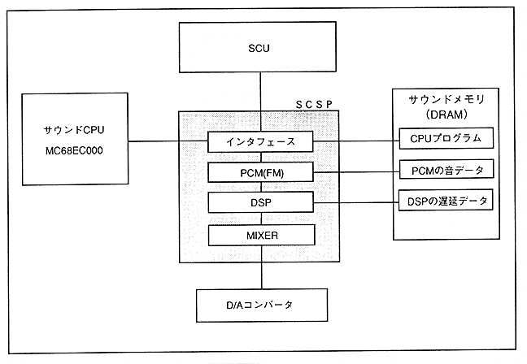

The main CPU, sound CPU, sound memory, and D / A converter are connected to SCSP. These can operate independently of the main process in this sound system.
The main CPU transfers the sound (CPU, DSP) program and waveform data to the SCSP sound memory via the SCU. The sound CPU transfers the waveform data to the internal register of SCSP. SCSP reads waveform data in sound memory and delay data to produce effects. These sounds are mixed by the mixer and output as sound through the D / A converter.
Figure 3.25 SCSP system configuration
